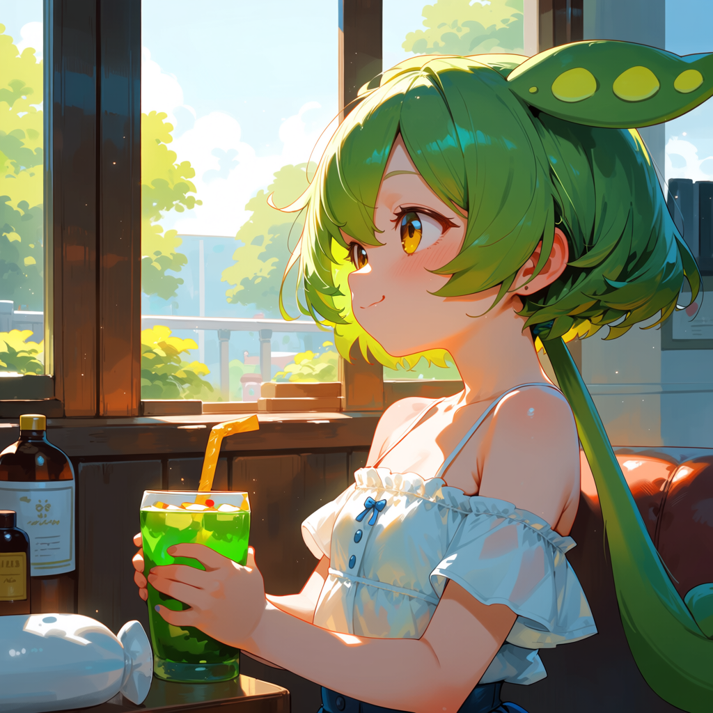

Pythonスクリプト1本で、ブラウザUIからすぐ起動。スマホ・タブレットからの操作にも対応し、LLMなしでも使える構成です。
ブラウザUIとComfyUIの連携を自動化し、最小構成で使い始められます。
Windowsでの実行を前提に、スマホからの操作や拡張にも対応しています。
--listen 推奨。Windowsなら start_anima_pipeline.bat で起動できます。
workflows/ に配置。start_anima_pipeline.bat を実行。初回は依存関係を自動導入。実際に生成したキャラクター・シーンの例です

最低構成はPythonとComfyUIのみ。LLMは任意です。
pip install requests で依存を導入し、すぐ実行できます。--listen を推奨。